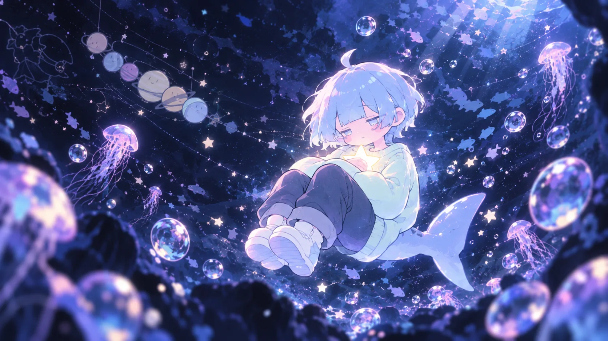

AN UNOFFICIAL FAN ARCHIVE ✦ DEEP BLUE DREAM ✦
深海に、夢を見つけに。
WELCOME TO
SAMEKO'S SEA✦
작은 상어가 헤엄치는 우주 같은 바다.
사메코를 좋아하는 마음을 모아 만든 팬의 작은 공간입니다.
01 — THE OCEAN OF DREAMSSCROLL TO EXPLORE ↓
ABOUT SAMEKO
✧ ✦ ✧
파도 너머,
사메코의 세계로.
さめこ · 深海 · 夢
사메코(さめこ)의 바다에서 영감을 받은 비공식 팬 페이지입니다. 좋아하는 음악에서 떠오르는 감정, 물속의 별빛 같은 이미지, 팬의 소소한 기록을 이곳에 모았습니다.
이 페이지에 담긴 그림은 이전에 함께 만든 꿈속의 심해 시리즈를 사용했습니다. 공식 정보와 팬의 창작·감상은 구분해 소개합니다.
🦈 SHARK🫧 DEEP SEA✧ DREAM

A LITTLE NOTE
“
보잘것없다고
생각했던 모습도
누군가에겐 아름답기를.
깊고 조용한 바다처럼, 있는 그대로의 자신이 편안할 수 있는 곳. 노래에서 받은 인상을 팬의 언어로 표현했습니다.
— A FAN'S INTERPRETATIONTHE DREAM GALLERY
꿈속의 장면들 ✦
이전에 제작한 심해 일러스트 10장. 사진을 누르면 크게 볼 수 있어요.
LETTERS FROM THE DEEP
팬의 작은 기록 ✦
일치하는 팬 기록이 없습니다.